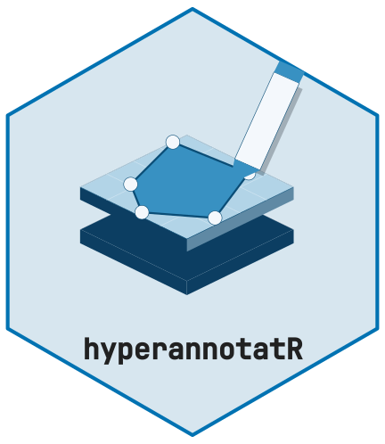

Reproducible analytical summaries
Source:vignettes/reproducible-analysis.Rmd
reproducible-analysis.Rmd
This example follows persisted annotations through masks, raw pixel
records, ROI spectra, image summaries, and agreement tables. It uses the
small synthetic reference bundle in the source repository at
tests/testthat/fixtures/analytical/. Its NumPy generator
computes the numerical reference independently of hyperannotatR. The
workflow never reads the expected JSON to calculate its results; the
regression test uses that JSON only for comparison.
The example functions are installed at
examples/reproducible-analysis.R. They are reusable source
code, not exported package APIs. The fixture bundle is kept in the
repository tests rather than duplicated in the installed package. To
reproduce this vignette, use a source checkout with the reviewed package
code installed, or use pkgload::load_all() from that
checkout first. Run the following code from the repository root (the
vignette build uses the equivalent relative path from its own
directory).
source(system.file("examples", "reproducible-analysis.R", package = "hyperannotatR"))
fixture_dir <- normalizePath("tests/testthat/fixtures/analytical")Create the input once, then reopen it for every analysis. The
synthetic entry ID is analytical-image-001; the two
imported ROI IDs are preserved. The settings record
at_annotation_revision(project), a SHA-256 digest of the
annotation content ("sha256:..."): rerunning on the same
persisted annotations records the same revision, and any change to the
annotations records a different one. For an adapted study, retain its
actual entry IDs and analyse the persisted project rather than
reimporting annotations into a fresh project for every run.
work <- tempfile("analytical-example-")
dir.create(work)
project_path <- file.path(work, "annotations.rds")
prepare_analytical_example(fixture_dir, project_path)
first <- run_analytical_example(project_path, fixture_dir, file.path(work, "first"))
second <- run_analytical_example(project_path, fixture_dir, file.path(work, "second"))
stopifnot(identical(first, second))
files <- list.files(file.path(work, "first"))
stopifnot(identical(
unname(tools::md5sum(file.path(work, "first", files))),
unname(tools::md5sum(file.path(work, "second", files)))
))Both functions refuse to overwrite existing outputs. The analysis
does not save or mutate its input project. The ten CSV tables and
settings.json are deterministic for the same persisted
input and software environment. Source paths, signatures, input hashes
and software versions deliberately remain in the settings; relocating
files or changing software can change provenance. No run timestamp or
runtime cache/read-generation identity enters these outputs. The saved
project’s own historical timestamps remain in that input file and
therefore in its checksum. Optional execution timestamps belong in a
separate run log, not in a result table or its deterministic
configuration.
Counts and estimands
Rectangles A and B each select nine pixels on the 4 by 5 grid. They
share two pixels. The bitfield mask assigns A=1, B=2, overlap=3 and
background=0. Membership is determined at polygon pixel centres at level
zero with touches=FALSE, engine="stars" and
overlap="bitor".
first$tables$counts
#> entry_id n_image n_roi n_unique_selected n_roi_memberships
#> 1 analytical-image-001 1 2 16 18
#> n_overlap n_background n_excluded_rois
#> 1 2 4 0
first$tables$mask
#> V1 V2 V3 V4 V5
#> 1 1 1 1 0 0
#> 2 1 1 3 2 2
#> 3 1 1 3 2 2
#> 4 0 0 2 2 2
first$tables$mask_codebook
#> value label layer roi_id n_px colour
#> 1 1 A analytical <NA> 9 #999999
#> 2 2 B analytical <NA> 9 #E69F00| Table | Row or count unit | Overlap treatment |
|---|---|---|
pixel_memberships |
One ROI-pixel-band record: 54 rows | Shared cells appear once per ROI |
unique_pixels |
One image-pixel-band record: 48 rows | Deduplicate (x,y,band) within this one image |
roi_statistics |
One ROI-band-statistic: 42 rows | Each ROI is summarized separately |
spectra |
One ROI-band finite mean: 6 rows | Each ROI has its own spectrum |
image_statistics |
One image-band summary: 3 rows | Each selected cell contributes once |
counts |
One image: 16 unique cells, 18 ROI memberships, 2 ROIs | Two overlap cells counted explicitly |
The x and y columns are one-based
column/row indices, whereas ROI geometry uses zero-based image
coordinates. Band identity and spectral coordinates are recorded in
settings. unit="nm" describes the spectral coordinate, not
the intensity values. No intensity unit or physical calibration is
inferred: this cube declares pixel calibration (1,1) in
px. Settings explicitly mark its physical calibration
unknown, so no physical-area result is produced.
The image summary below estimates finite-only statistics across the
unique selected pixels within this image. Its band-one
sum is 1937, with 15 finite contributors out of 16 selected cells, so
its mean is 1937/15. Pooling repeated ROI records would use
17 finite contributors and sum 2193. Averaging ROI means would weight
the two ROIs equally. Those are different estimands and neither is
silently substituted for the unique-pixel image summary.
first$tables$image_statistics
#> entry_id band wavelength unit estimand
#> 1 analytical-image-001 1 450 nm unique selected pixels within image
#> 2 analytical-image-001 2 550 nm unique selected pixels within image
#> 3 analytical-image-001 3 650 nm unique selected pixels within image
#> n_selected n_valid n_invalid mean median sd min max sum
#> 1 16 15 1 129.1333 131.0 10.35696 112 145 1937
#> 2 16 15 1 228.3333 231.0 11.28632 211 245 3425
#> 3 16 14 2 326.3571 324.5 10.55103 311 344 4569
stopifnot(first$tables$image_statistics$sum[1] == 1937)
stopifnot(first$tables$image_statistics$mean[1] == 1937 / 15)Nonfinite values and spectra
at_extract(..., stat="all", nonfinite="omit") and
at_extract_spectrum(..., nonfinite="omit") choose
finite-only statistics explicitly. n_px and the statistic
n still mean selected support. n_valid counts
finite contributors; n_invalid counts selected NA, NaN and
infinite values. Sample SD uses denominator n_valid - 1; it
is undefined for a singleton. All-invalid summaries, including sum, are
NA. Empty selections have zero contributors; the example retains an
image-band row with NA statistics.
first$tables$spectra[c("label", "band", "wavelength", "unit", "value",
"n_px", "n_valid", "n_invalid")]
#> label band wavelength unit value n_px n_valid n_invalid
#> 1 A 1 450 nm 123.3750 9 8 1
#> 2 A 2 550 nm 221.8750 9 8 1
#> 3 A 3 650 nm 322.0000 9 9 0
#> 4 B 1 450 nm 134.0000 9 9 0
#> 5 B 2 550 nm 235.3750 9 8 1
#> 6 B 3 650 nm 332.4286 9 7 2The raw pixel API retains nonfinite samples. There are four unique
invalid pixel-band values but five invalid ROI-pixel-band records,
because the positive infinity in the overlap belongs to both ROIs. The
raw tables include sample_status (finite,
NA, NaN, +Inf, -Inf)
to preserve distinctions that CSV missing-value serialization could
collapse. The four unselected background cells are a spatial exclusion,
separate from invalid selected samples. n_excluded_rois
counts ROIs with no selected cells; it is zero here. The example applies
no ROI or label filters.
This workflow produces numerical spectra and tables. It generates no image preview. Display normalization for the mixed NaN/Inf RGB fixture remains outside this qualification; no RGB or native ImageMagick success is claimed.
Agreement with explicit alignment
The separate 3 by 4 categorical and bitfield NPY cases exercise
agreement; these are not prediction masks for the 4 by 5 cube. The
independent fixture generator declares their common row/column grids.
Since arrays alone cannot prove source registration, this example uses
alignment="assert" and records that basis. For study masks
with durable common source/grid metadata, use
alignment="check" to verify it. Equal dimensions alone are
not evidence of registration, and assertion never resamples mismatched
grids.
at_read_npy() receives explicit encoding, background and
label codebooks. Ordinary comparisons use
code_alignment="strict". The deliberately swapped
categorical codes use code_alignment="by-label", preserving
original codebooks in settings. An absent class remains a table row with
undefined Dice/IoU, and macro means exclude such undefined rows.
first$tables$agreement
#> comparison value label n_true n_pred tp fp fn dice iou
#> 1 categorical 1 A 4 4 3 1 1 0.75 0.6000000
#> 2 categorical 2 B 4 4 3 1 1 0.75 0.6000000
#> 3 categorical 3 absent 0 0 0 0 0 NA NA
#> 4 categorical_remapped 1 A 4 4 3 1 1 0.75 0.6000000
#> 5 categorical_remapped 2 B 4 4 3 1 1 0.75 0.6000000
#> 6 categorical_remapped 3 absent 0 0 0 0 0 NA NA
#> 7 bitfield 1 A 5 5 5 0 0 1.00 1.0000000
#> 8 bitfield 2 B 5 5 3 2 2 0.60 0.4285714
#> 9 bitfield 4 absent 0 0 0 0 0 NA NA
first$tables$agreement_overall
#> comparison accuracy kappa mean_dice mean_iou n_px encoding
#> 1 categorical 0.7500000 0.625 0.75 0.6000000 12 categorical
#> 2 categorical_remapped 0.7500000 0.625 0.75 0.6000000 12 categorical
#> 3 bitfield 0.6666667 NA 0.80 0.7142857 12 bitfield
#> alignment code_alignment background nonfinite
#> 1 asserted strict 0 error
#> 2 asserted by-label 0 error
#> 3 asserted strict 0 errorCategorical accuracy is 3/4, Cohen’s kappa is 5/8, and A/B Dice and
IoU are 3/4 and 3/5. Explicit remapping reproduces them. Bitfield A has
Dice/IoU 1; B has Dice 3/5 and IoU 3/7. Its overall accuracy of 2/3 is
exact membership-set agreement, including background; categorical kappa
is undefined for bitfields. Each overall agreement row counts all 12
cells, including background. Its nonfinite policy is
error.
Traceability and scope
settings.json accompanies the tables with the persisted
entry/ROI IDs, the annotation revision digest, durable source descriptor
and reader options, MD5 hashes of the project and all eight data inputs
(including the ENVI payload), calibration, band coordinates/units,
extraction and rasterization settings, mask codebook, both sides’
validated agreement metadata/codebooks, estimands, and count
definitions. It records the actual R and dependency versions and sf
external library versions. The ENVI backend is implemented by
hyperannotatR, whose version is recorded; separately unavailable
plugin-version metadata is explicitly "unknown". MD5 checks
exact-byte integrity, not authenticity. The source tree or build
artifact used for a study should also be archived with these
outputs.
first$settings$sampling_units
#> $unique_selected_pixels
#> [1] 16
#>
#> $selected_roi_memberships
#> [1] 18
#>
#> $roi_count
#> [1] 2
#>
#> $image_count
#> [1] 1
first$settings$extraction
#> $level
#> [1] 0
#>
#> $bands
#> [1] 1 2 3
#>
#> $layer
#> NULL
#>
#> $label
#> NULL
#>
#> $nonfinite
#> [1] "omit"
#>
#> $statistics
#> [1] "mean" "median" "sd" "min" "max" "sum" "n"
#>
#> $max_px
#> [1] 1000000
#>
#> $pixel_coordinates
#> [1] "one-based x column, y row"
#>
#> $selected_support
#> [1] "polygon pixel centres; touches=FALSE"
#>
#> $n
#> [1] "selected pixels per ROI and band"
#>
#> $n_valid
#> [1] "finite contributors"
#>
#> $n_invalid
#> [1] "selected NA, NaN, +Inf or -Inf samples"
#>
#> $sd
#> [1] "sample SD, denominator n_valid - 1; singleton is NA"
#>
#> $empty_or_all_invalid
#> [1] "All-invalid statistics are NA including sum; empty ROIs yield no summary rows and are counted as excluded; empty image-band rows retain zero counts and NA statistics"
#>
#> $sample_contract
#> [1] "raw-scalar-v1"
first$settings$versions
#> $R
#> [1] "4.6.1"
#>
#> $platform
#> [1] "x86_64-pc-linux-gnu"
#>
#> $packages
#> $packages$hyperannotatR
#> [1] "0.3.0"
#>
#> $packages$sf
#> [1] "1.1.3"
#>
#> $packages$stars
#> [1] "0.7.3"
#>
#> $packages$tibble
#> [1] "3.3.1"
#>
#> $packages$dplyr
#> [1] "1.2.1"
#>
#> $packages$jsonlite
#> [1] "2.0.0"
#>
#> $packages$rlang
#> [1] "1.3.0"
#>
#> $packages$cli
#> [1] "3.6.6"
#>
#>
#> $sf_external
#> $sf_external$GEOS
#> [1] "3.14.1"
#>
#> $sf_external$GDAL
#> [1] "3.12.2"
#>
#> $sf_external$proj.4
#> [1] "9.7.1"
#>
#> $sf_external$GDAL_with_GEOS
#> [1] "true"
#>
#> $sf_external$USE_PROJ_H
#> [1] "true"
#>
#> $sf_external$PROJ
#> [1] "9.7.1"This is a descriptive example for one image and two overlapping ROIs. Pixels, bands and ROI means are not independent image replicates. Inferential uncertainty requires the study’s independent sampling unit (for example a donor, specimen or image, as justified by its design), with nesting and overlap handled explicitly. There is no resampling here and the recorded seed is null. Any added resampling must declare its seed and independent unit. No model training or clinical claim is part of this example.
The implementation retains existing extraction memory bounds: one
bounding-box tile per ROI, a max_px=1e6 raw extraction
guard, and in-memory deduplication and tables. It is a small synthetic
workflow, not a streaming analysis engine or whole-slide resource
qualification.